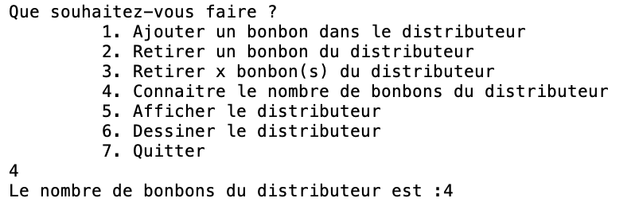

Objectifs de ce cycle
Dans ce cycle de 3 semaines vous allez découvrir la bases de la programmation objet :
- Comment concevoir une classe
- Comment déclarer / initialiser des objets
- Comment déclarer / appeler des méthodes
Ce cycle est un peu spécial :
- Les séances 1 et 2 de TD seront des séances de cours / TD intégrés. Pas de travail en groupe.
- La séance 3 de TD se fera en salle TD. Vous ferez un devoir blanc.
- Lors des 3 séances de TP, vous aurez à :
- séance 1 : coder une variante du jeu du morpion.
- séance 2 : créer un programme permettant de gérer un distributeur de bonbons. Vous serez guidés pour sa conception.
Morpion
Ce TP (sur une semaine) consiste à coder une variante du jeu du morpion. Il a pour objectifs :
- de vous familiariser aux notions objets vues en TD en lisant du code contenant plusieurs classes et énumérations.
- de vous préparer à la SAÉ S1.02 en vous faisant réfléchir à quelques algorithmes sur les grilles, et leur implémentation.

Descriptif
Nous utilisons ici une variante du morpion, avec score. En toute logique il devrait fonctionner de la sorte :
- Chaque joueur pose à tour de rôle son pion.
- Le programme vérifie que le pion est posé sur une case libre et qui existe.
- Le vainqueur est annoncé quand 3 pions sont alignés.
- Le match nul est annoncé si la grille est remplie sans que 3 pions soient alignés.
- En parallèle, chaque joueur dispose d'un score (ce n'est pas le cas
du morpion "classique").
Lorsqu'un joueur joue un coup sur une case, son score augmente de :
1 + (le nombre de case voisines lui appartenant) - (le nombre de cases voisines appartenant à son adversaire). Le score de son adversaire ne change pas. Le terme case voisine désigne toutes les cases jouxtant la case jouée, soit par l'un de ses côtés, soit par l'une de ses diagonales. Cela fait donc 3 cases voisines pour l'un des 4 coins du plateau, 8 cases voisines pour une case loin de tout bord, etc. - À la fin de la partie, le gagnant (= celui qui a aligné 3 pions) marque le nombre de points de son score, et l'adversaire ne marque pas de point.
Rendez-vous maintenant sur la page ressourcesTP pour vous guider dans le codage de ce jeu.
Distributeur de bonbons
Descriptif
Dans ce TP (sur 2 semaines), vous allez gérer un distributeur de bonbons. Le programme vous permet de réaliser 7 actions différentes :
- Ajouter un bonbon dans le distributeur
- Retirer un bonbon du distributeur
- Retirer x bonbon(s) du distributeur
- Connaitre le nombre de bonbons du distributeur
- Afficher le distributeur
- Dessiner le distributeur
- Quitter
Après vous avoir donné toutes les spécifications liées à ce sujet, nous vous guiderons afin de créer les différentes classes nécessaires, les premières méthodes et test unitaires.
Ajouter un bonbon dans le distributeur
Il existe 5 bonbons différents. Chaque bonbon est défini par un parfum (noisette, caramel, fraise, pomme, chocolat, riz) un poids (en grammes) et un nombre de calories. Tous les bonbons ont des caractéristiques uniques (parfum, poids, calories), sauf les Chewing gum qui peuvent avoir n'importe quel parfum. Voici la liste des spécifications des bonbons.
Chypresers: un parfumriz, un poids de55get242 calories.Tigre: un parfumchocolat, un poids de45get228 calories.Venus: un parfumcaramel, un poids de45get228 calories.Noisettes: un parfumnoisette, un poids de50get250 calories.Chewing gum: un parfump(parmi les 6), un poids de10get52 calories.
Comme sur la vidéo ci-dessous, l'utilisateur doit pouvoir ajouter (dans la limite du distributeur) les bonbons qu'il souhaite. S'il ajoute un chewing gum, il devra choisir le parfum de celui-ci. Un distributeur peut contenir au maximum 50 bonbons.
Connaitre le nombre de bonbons du distributeur
Quand l'option 4 est choisie, il faut afficher le nombre de bonbons contenu dans le distributeur comme dans l'exemple ci-dessous :

Afficher le distributeur
Quand l'option 5 est choisie, il faut afficher le contenu du distributeur comme dans l'exemple ci-dessous :
Retirer un bonbon du distributeur
Quand l'option 2 est choisie, le dernier bonbon ajouté est supprimé du distributeur.
Dans la vidéo suivante, les bonbons ont été ajoutés dans l'ordre suivant : Chypresers, Venus, Chewing gum Fraise, Chewing gum chocolat. Retirer un bonbon va donc retirer le dernier : Chewing gum chocolat et l'afficher. Si on affiche le contenu du distributeur, on peut voir que le prochain bonbon qui sera retiré sera le Chewing gum Fraise.
Retirer x bonbon(s) du distributeur
Quand l'option 3 est choisie, les x derniers bonbons ajoutés sont supprimés du distributeur.
Dans la vidéo suivante, il reste 3 bonbons : Chypresers, Venus et Chewing gum Fraise. Si on en retire 2, le programme affiche la liste des bonbons qui ont été supprimés. Si on affiche le contenu du distributeur, il reste alors un seul bonbon : Chypresers.
Rendez-vous maintenant sur la page ressourcesTP pour vous guider dans la construction de votre distributeur de bonbons.
Bonus : dessiner le distributeur
Quand l'option 6 est choisie, il faut afficher le contenu du distributeur comme dans l'exemple ci-dessous :
- chaque caractère correspond à un bonbon du distributeur (un caractère par parfum)
- le dernier bonbon ajouté est tout en bas du distributeur (au milieu des tirets, c'est celui qui sera retiré en premier).
Attendus
| Séance | Attendu TD | Attendu TP |
|---|---|---|
| Semaine 1 | Partie 1 des slides | Morpion |
| Semaine 2 | Partie 2 des slides | Distributeur de bonbons |